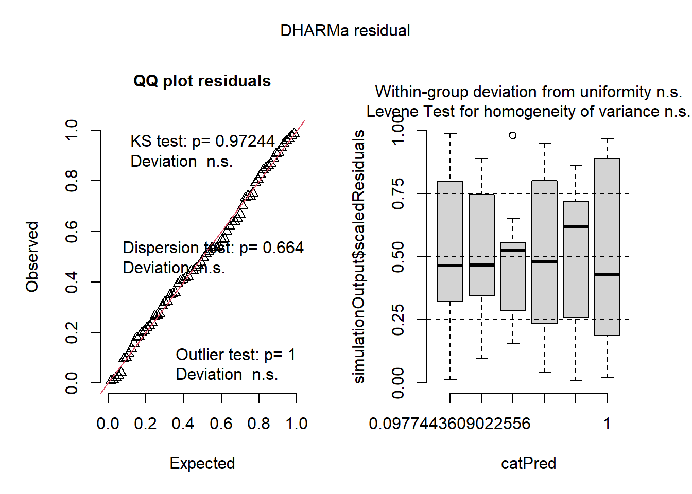

count spray count2
1 10 A 3.162278
2 7 A 2.645751
3 20 A 4.472136
4 14 A 3.741657
5 14 A 3.741657
6 12 A 3.464102
7 10 A 3.162278
8 23 A 4.795832
9 17 A 4.123106
10 20 A 4.472136
11 14 A 3.741657
12 13 A 3.605551
13 11 B 3.316625
14 17 B 4.123106
15 21 B 4.582576
16 11 B 3.316625
17 16 B 4.000000
18 14 B 3.741657
19 17 B 4.123106
20 17 B 4.123106
21 19 B 4.358899
22 21 B 4.582576
23 7 B 2.645751
24 13 B 3.605551
25 0 C 0.000000
26 1 C 1.000000
27 7 C 2.645751
28 2 C 1.414214
29 3 C 1.732051
30 1 C 1.000000
31 2 C 1.414214
32 1 C 1.000000
33 3 C 1.732051
34 0 C 0.000000
35 1 C 1.000000
36 4 C 2.000000
37 3 D 1.732051
38 5 D 2.236068
39 12 D 3.464102
40 6 D 2.449490
41 4 D 2.000000
42 3 D 1.732051
43 5 D 2.236068
44 5 D 2.236068
45 5 D 2.236068
46 5 D 2.236068
47 2 D 1.414214
48 4 D 2.000000
49 3 E 1.732051
50 5 E 2.236068
51 3 E 1.732051
52 5 E 2.236068
53 3 E 1.732051
54 6 E 2.449490
55 1 E 1.000000
56 1 E 1.000000
57 3 E 1.732051
58 2 E 1.414214
59 6 E 2.449490
60 4 E 2.000000
61 11 F 3.316625
62 9 F 3.000000
63 15 F 3.872983
64 22 F 4.690416
65 15 F 3.872983
66 16 F 4.000000
67 13 F 3.605551
68 10 F 3.162278
69 26 F 5.099020
70 26 F 5.099020
71 24 F 4.898979
72 13 F 3.605551
##agora o modelo resposta será o count2m2 <-lm(sqrt (count) ~spray, data = insetos2)m2
OK: residuals appear as normally distributed (p = 0.681).
check_heteroscedasticity(m2)
OK: Error variance appears to be homoscedastic (p = 0.854).
library(DHARMa)plot(simulateResiduals(m2))

library(emmeans)
Warning: pacote 'emmeans' foi compilado no R versão 4.4.3
Welcome to emmeans.
Caution: You lose important information if you filter this package's results.
See '? untidy'
medias2 <-emmeans (m2,~ spray, type ="response")medias2
spray response SE df lower.CL upper.CL
A 14.14 1.360 66 11.550 17.00
B 15.03 1.410 66 12.352 17.97
C 1.55 0.452 66 0.779 2.58
D 4.68 0.785 66 3.248 6.38
E 3.27 0.656 66 2.095 4.72
F 16.15 1.460 66 13.370 19.19
Confidence level used: 0.95
Intervals are back-transformed from the sqrt scale
library(multcomp)
Warning: pacote 'multcomp' foi compilado no R versão 4.4.3
Carregando pacotes exigidos: mvtnorm
Warning: pacote 'mvtnorm' foi compilado no R versão 4.4.3
Carregando pacotes exigidos: survival
Carregando pacotes exigidos: TH.data
Warning: pacote 'TH.data' foi compilado no R versão 4.4.3
Carregando pacotes exigidos: MASS
Anexando pacote: 'MASS'
O seguinte objeto é mascarado por 'package:dplyr':
select
Anexando pacote: 'TH.data'
O seguinte objeto é mascarado por 'package:MASS':
geyser
cld(medias2, Letters = LETTERS)
spray response SE df lower.CL upper.CL .group
C 1.55 0.452 66 0.779 2.58 A
E 3.27 0.656 66 2.095 4.72 AB
D 4.68 0.785 66 3.248 6.38 B
A 14.14 1.360 66 11.550 17.00 C
B 15.03 1.410 66 12.352 17.97 C
F 16.15 1.460 66 13.370 19.19 C
Confidence level used: 0.95
Intervals are back-transformed from the sqrt scale
Note: contrasts are still on the sqrt scale. Consider using
regrid() if you want contrasts of back-transformed estimates.
P value adjustment: tukey method for comparing a family of 6 estimates
significance level used: alpha = 0.05
NOTE: If two or more means share the same grouping symbol,
then we cannot show them to be different.
But we also did not show them to be the same.
library(agricolae)
Warning: pacote 'agricolae' foi compilado no R versão 4.4.3
k <-kruskal(insetos$count, insetos$spray)k
$statistics
Chisq Df p.chisq t.value MSD
54.69134 5 1.510845e-10 1.996564 8.462804
$parameters
test p.ajusted name.t ntr alpha
Kruskal-Wallis none insetos$spray 6 0.05
$means
insetos.count rank std r Min Max Q25 Q50 Q75
A 14.500000 52.16667 4.719399 12 7 23 11.50 14.0 17.75
B 15.333333 54.83333 4.271115 12 7 21 12.50 16.5 17.50
C 2.083333 11.45833 1.975225 12 0 7 1.00 1.5 3.00
D 4.916667 25.58333 2.503028 12 2 12 3.75 5.0 5.00
E 3.500000 19.33333 1.732051 12 1 6 2.75 3.0 5.00
F 16.666667 55.62500 6.213378 12 9 26 12.50 15.0 22.50
$comparison
NULL
$groups
insetos$count groups
F 55.62500 a
B 54.83333 a
A 52.16667 a
D 25.58333 b
E 19.33333 bc
C 11.45833 c
attr(,"class")
[1] "group"
##GLM com A FAMILIA E FUNÇÃO DE LIGAÇÃOm3 <-glm(count ~ spray, family =poisson(link ="log"), data = insetos)plot(simulateResiduals(m3))